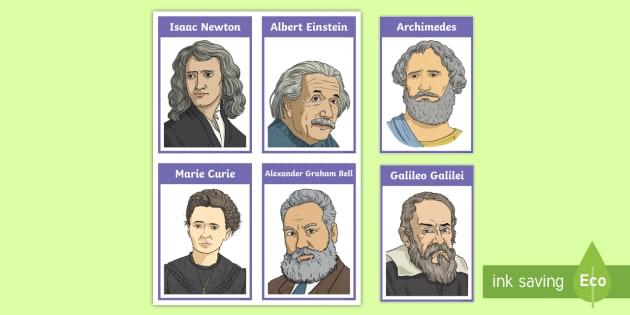
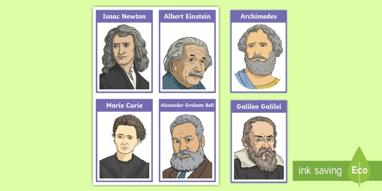

Click on any image from this scientists images to read more informations about each one feom them.
And on the left we have links to some another scientists to read more informations about them click on it.
Click on any image from this scientists images to read more informations about each one feom them.
And on the left we have links to some another scientists to read more informations about them click on it.
A scientist is someone who conducts scientific research to advance knowledge in an area of interest.
In classical antiquity, there was no real ancient analog of a modern scientist.
Instead, philosophers engaged in the philosophical study of nature called natural philosophy,
a precursor of natural science.[3] It was not until the 19th century that the term scientist
came into regular use after it was coined by the theologian, philosopher, and historian of science William Whewell in 1833.
In modern times, many scientists have advanced degrees[6] in an area of science and pursue careers in various sectors of the economy such as academia, industry, government, and nonprofit environments.